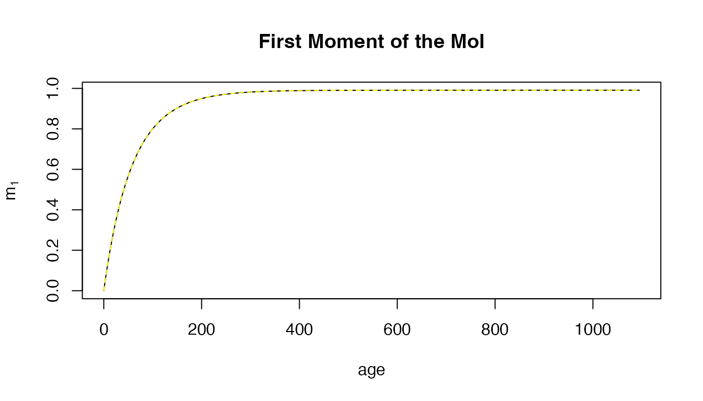
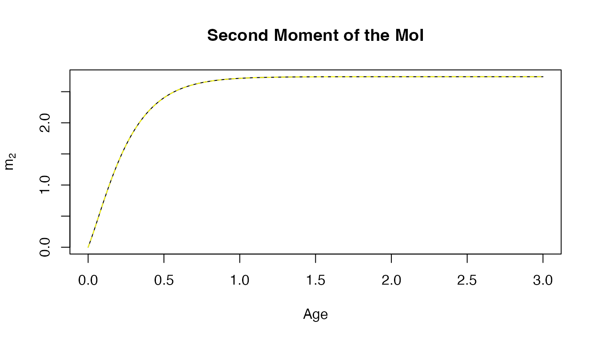
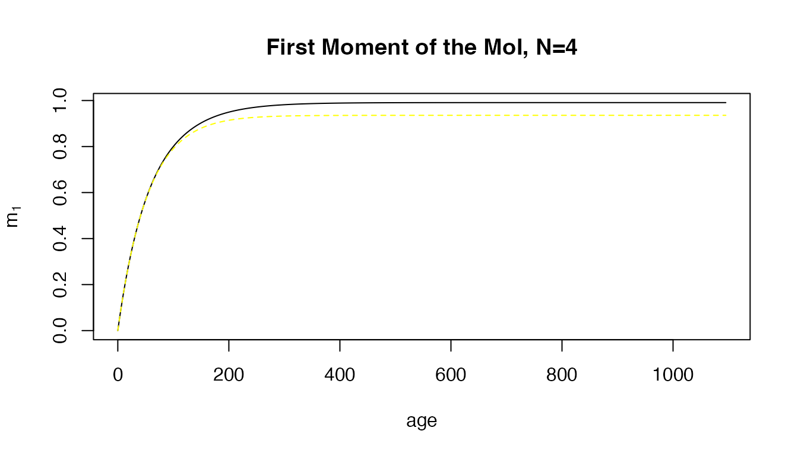
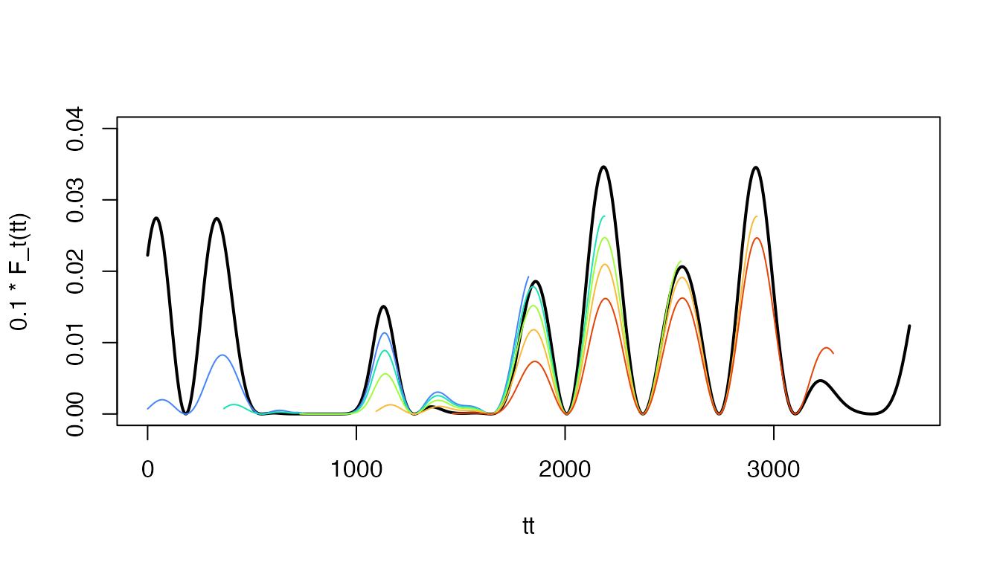
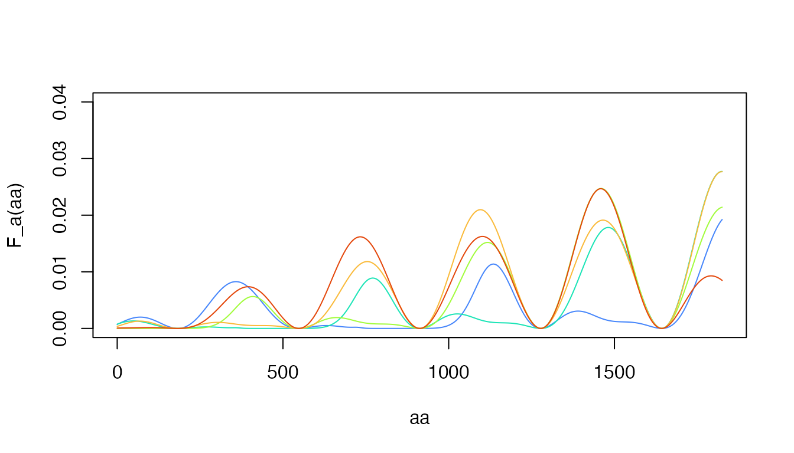
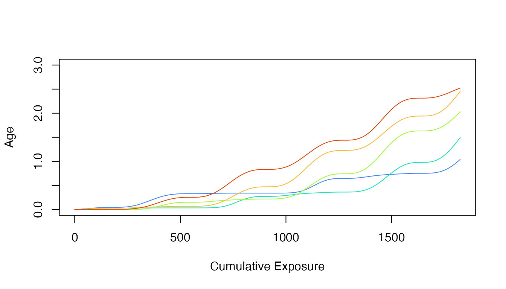
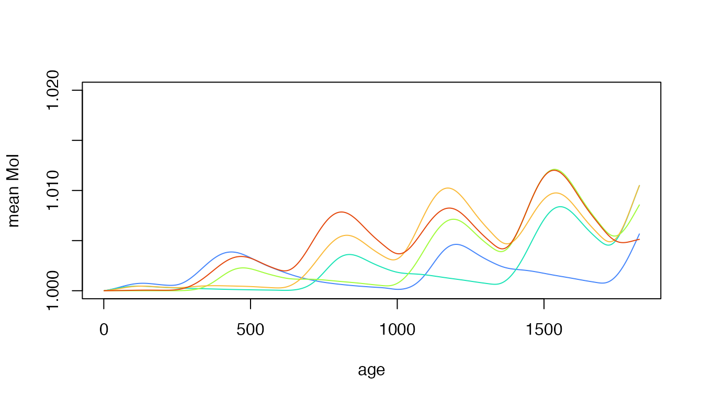

SquIP
SquIP.RmdSquIP is a dynamical system describing the dynamics of the multiplicity of infection (MoI) in a cohort of humans as it ages. In-Line documentation for SquIP is accessed as:
help(SquIP)SquIP was developed by extending the master equations for the queuing process model by adding terms that describe treating and curing infections and a chemoprotected class.
Implementation — The file SquIP.R
defines three functions:
dSquIP
solve_SquIP
parse_SquIPThis numerical implementation truncates the infinite system of differential equations. To verify the code and check the accuracy of the truncated system, we also derive and compute hybrid variables describing the first few moments of the infinite system.
Related
SquIPz extends SquIP with a Tweedie process for heterogeneous exposure.
SIPm
The Model
Variables
The independent variable is age,
The dependent variables are:
is the expected number uninfected and susceptible to infection
is the expected number uninfected and chemo-protected
is the expected number infected with clones
We let denote the expected population density of the cohort as it ages:
Similarly, we introduce the variable :
Initial Conditions
In the model, we assume that everyone is born susceptible. is passed as a parameter, and the initial conditions are set to
Exposure and Infection
We let denote the force of infection (FoI). This model, SquIP, assumes that each incident infection increases the MoI by exactly one. The model SquIPz implements exposure as a Tweedie process.
The model assumes that each clone clears independently of the others at rate so for those infected with clones, the MoI goes down by one at the rate
Treatment and Chemprotection
These equations assume that individuals are treated and cured for several different reasons:
Incident infections cause disease and a fraction gets treated
Everyone in the population takes drugs at a background rate
In addition to other modes of treatment, infected individuals get treated at the higher rate
After being treated and cured, individuals enter the chemoprotected class Chemoprotection is lost at the rate and they enter the susceptible class
Implementation and Verification
In this implementation, the infinite system of equations is truncated at For the last differential equation no new infections occur () and there is no so nothing is added from above:
In the implementation, if no value for is passed, it is set to
N = round(max(10*h/r,20))Hybrid Variables:
This implementation also computes several other variables: Let
The dynamics of the hybrid variable are:
Let denote the moment of the distribution of the MoI:
With some algebra (see below), we can derive an equation for the dynamics of the hybrid variable are:
Similarly, we can compute the dynamics of
The dynamics of the hybrid variables, and are verified by solving the equations and using the formulas to compute their values.
Numerical Verification
F_a = make_F_a(1)
q_out <- solve_SquIP(8/365, F_a, sigma=2/365, xi=0, Amax=3*365)For verification, the variable
is computed two ways, and we
we note that they match. To see it, we plotted both, one in solid black
and the other dashed yellow:
with(q_out, plot(age, m_1, type = "l", ylab = expression(m[1]), main = "First Moment of the MoI"))
with(q_out, lines(age, m1, lty=2, col = "yellow"))
Since it’s hard to see differences, we can simply plot the differences. Here, we’ve set the limits to be so we can visualize the differences:
ylm = 1e-14
with(q_out, plot(age, m_1-m1, type = "l", ylab = "Errors", main = "First Moment: Numerical Errors", ylim = c(-ylm, ylm)))
with(q_out, plot(age/365, m_2, type = "l", main = "Second Moment of the MoI",
ylab = expression(m[2]),
xlab = "Age", ylim = range(m_2, m2)))
with(q_out, lines(age/365, m2, lty=2, col = "yellow"))
ylm = 1e-14
with(q_out, plot(age, m_2-m2, type = "l",
ylab = "Errors",
main = "Second Moment: Numerical Errors",
ylim = c(-ylm, ylm)))We note that if we had truncated the system of equations at the moments diverge:
q1_out <- solve_SquIP(8/365, F_a, sigma=2/365, xi=0, Amax=3*365, N=4)
with(q1_out, plot(age, m_1, type = "l",
ylab = expression(m[1]),
main = "First Moment of the MoI, N=4"))
with(q1_out, lines(age, m1, lty=2, col = "yellow"))
# Example
clrs = viridisLite::turbo(7)
set.seed(234)
Sa = makepar_F_type2()
Sp = makepar_F_sin()
Tp = makepar_F_spline(seq(0, 3650, length.out=11), 1+runif(11, -1, 1), X=2)
Kp = makepar_F_sharkbite(D=730, L=365)
F_t <- make_ts_function(scale = 0.05, season_par=Sp, trend_par=Tp, shock_par=Kp)
F_a <- make_F_a(avg = 3/365, age_par=Sa, season_par=Sp, trend_par=Tp, shock_par=Kp)
tt <- seq(0, 3650, by=5)
aa <-seq(0, 365*5, by =5)
plot(tt, 0.05*F_t(tt), type = "l")
plot(tt, 0.1*F_t(tt), type = "l", lwd=2, ylim = c(0,0.04))
lines(aa, F_a(aa), type = "l", col = clrs[2])
lines(aa+365, F_a(aa, 365), type = "l", col = clrs[3])
lines(aa+730, F_a(aa, 730), type = "l", col = clrs[4])
lines(aa+1095, F_a(aa, 1095), type = "l", col = clrs[5])
lines(aa+1460, F_a(aa, 1460), type = "l", col = clrs[6])
plot(aa, F_a(aa), type = "n", lwd=2, ylim = c(0,0.04))
lines(aa, F_a(aa), type = "l", col = clrs[2])
lines(aa, F_a(aa, 365), type = "l", col = clrs[3])
lines(aa, F_a(aa, 730), type = "l", col = clrs[4])
lines(aa, F_a(aa, 1095), type = "l", col = clrs[5])
lines(aa, F_a(aa, 1460), type = "l", col = clrs[6])
plot(aa, cumsum(F_a(aa)), ylab = "Age", xlab = "Cumulative Exposure", type = "n", ylim = c(0,3))
lines(aa, cumsum(F_a(aa)), type = "l", col = clrs[2])
lines(aa, cumsum(F_a(aa, 365)), type = "l", col = clrs[3])
lines(aa, cumsum(F_a(aa, 730)), type = "l", col = clrs[4])
lines(aa, cumsum(F_a(aa, 1095)), type = "l", col = clrs[5])
lines(aa, cumsum(F_a(aa, 1460)), type = "l", col = clrs[6])
q3_out1 <- solve_SquIP(5/365, F_a, sigma=2/365, xi=0, Amax=5*365)
q3_out2 <- solve_SquIP(5/365, bday=365, F_a, sigma=2/365, xi=0, Amax=5*365)
q3_out3 <- solve_SquIP(5/365, bday=730, F_a, sigma=2/365, xi=0, Amax=5*365)
q3_out4 <- solve_SquIP(5/365, bday=365*3, F_a, sigma=2/365, xi=0, Amax=5*365)
q3_out5 <- solve_SquIP(5/365, bday=365*4, F_a, sigma=2/365, xi=0, Amax=5*365)
with(q3_out1, plot(age, m_1/x, col = clrs[2], ylab = "mean MoI", type ="l", ylim = c(1, 1.02)))
with(q3_out2, lines(age, m_1/x, col = clrs[3]))
with(q3_out3, lines(age, m_1/x, col = clrs[4]))
with(q3_out4, lines(age, m_1/x, col = clrs[5]))
with(q3_out5, lines(age, m_1/x, col = clrs[6]))
Derivations
Infected
We can derive the equation for by collecting terms:
Since most things cancel, we simply get:
MoI Distribution, First Moment
The dynamics of are given by:
Several of the terms can be handled all at once:
Natural Clearance — For the terms involving – we can see a pattern by looking at the terms one by one. For example, from we add , but from we subtract leaving us with In general, we get:
Exposure — For the terms involving exposure, We note that
Demography —
Now, we compute terms, we get:
Putting it all together, we get that or